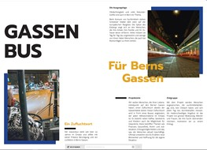

Liebe Freunde , Bekannte und Statusbesucher
Wieder einmal habe ich das Privileg eine längere Velotour zu machen. Am 30. Mai soll es von
Trondheim (Norwegen) losgehen und ca. 1800km weiter nördlich am Nordkap enden. Für diese Tour habe ich einen Monat Zeit.
Ich will die Tour als Charity Ride anbieten.
Wind, Regen und Sonne werden meine engsten Begleiter sein.
Aber auch Du kannst dabei sein und mit Deinem Beitrag mich motivieren weiter zu radeln und vorallem geht Deine Spende zu 100% in das Projekt Gassenküche Bern welches Du im Link anschauen kannst.
Sei ein Teil davon, es würde mich riesig freuen.
René
Click the preview below to view the full brochure:
Scanne den QR-Code unten mit deiner Banking-App, um direkt an die Gassenküche Bern zu spenden – ganz einfach und sicher. Vielen herzlichen Dank für deinen Beitrag!
Alternativ kannst du die Spende auch manuell mit folgenden Angaben tätigen:
Bank: Valiant Bank AG, Bundesplatz, 3001 Bern
Empfänger: Verein Vineyard Bern, Postfach 828, 3000 Bern 8
Spendenzweck: Gassenbus
IBAN: CH09 0630 0016 6536 0520 4